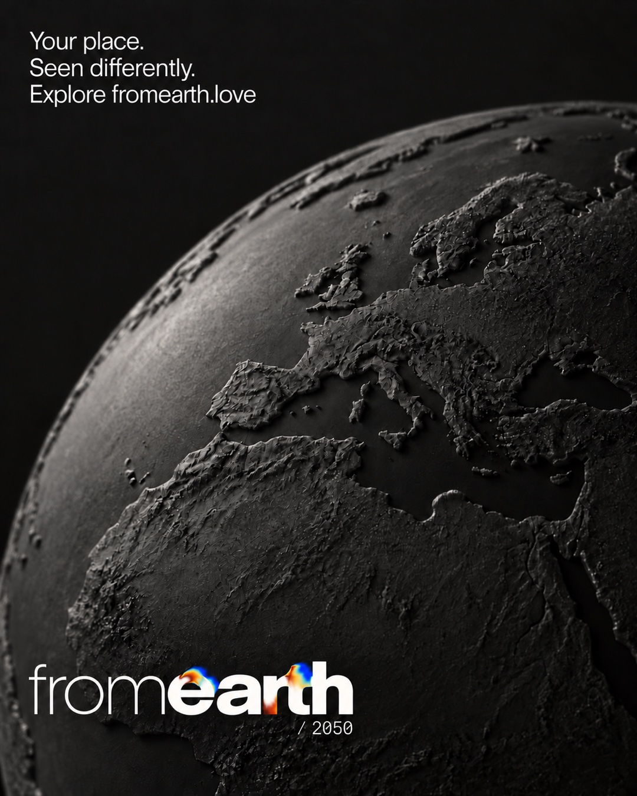

A place to begin.
An independent interactive experience.
An interactive globe.
A familiar city.
A future worth exploring.
 Download press kit
Download press kit Press & media
Climate projections become more tangible when you start with a place you know.
From an idea by Robin M.
Created by fromanother

An independent interactive experience.
An interactive globe.
A familiar city.
A future worth exploring.
Move the mouse or draw with your finger. Press Space for a wave of color.
Eight-second loops. Two color editions.
Campaign illustrations and composed motion assets. Source information and captions are provided below.
Images, films, interface footage and motion masters.
Loading media library…
Download this collection ↘The media library could not load. Please refresh, or download the complete press kit above.
English copy for articles, listings and introductions.
Sources, assumptions and useful context.
For interviews, additional material or a closer look at the project.
We would be happy to receive your comments and suggestions.
Contact fromanotherCampaign images are conceptual illustrations. Recorded interface footage and edited films are identified in the media library. The live experience may evolve.